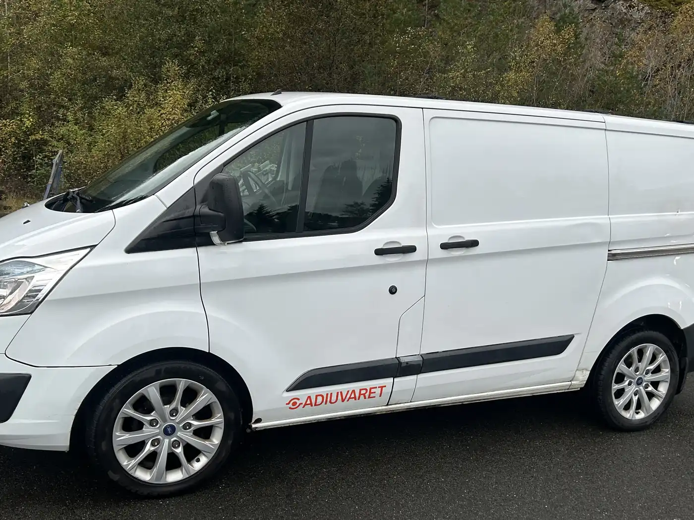

Om oss
Erfaring der verdiene er
Adiuvaret har en sterk markedsposisjon innen håndtering av konkursbo i Bergen og på Haugalandet. Vi er den foretrukne bomedhjelper for mange av bostyrerne og bankene.

Morten Iversen, daglig leder
Morten har 15 års erfaring fra bank, både internasjonalt og nasjonalt, med spesialisering innen restrukturering av bedrifter. Sammen med selskapets ledelse, eiere, juridiske rådgivere og samarbeidspartnere har han funnet løsninger for å redde verdier og arbeidsplasser.
- Bredt nettverk – av samarbeidspartnere og kjøpere.
- Alle bransjer – vi bistår uansett virksomhetens art.
- Ordentlighet – for kunder, debitor, huseiere og kjøpere.
«Ingen konkursbo er for liten eller for stor.»
Verdier skal sikres – ofte på kort tid
Ta kontakt for en uforpliktende samtale om saken. Vi sier hva den krever, og hvordan vi kan bistå.